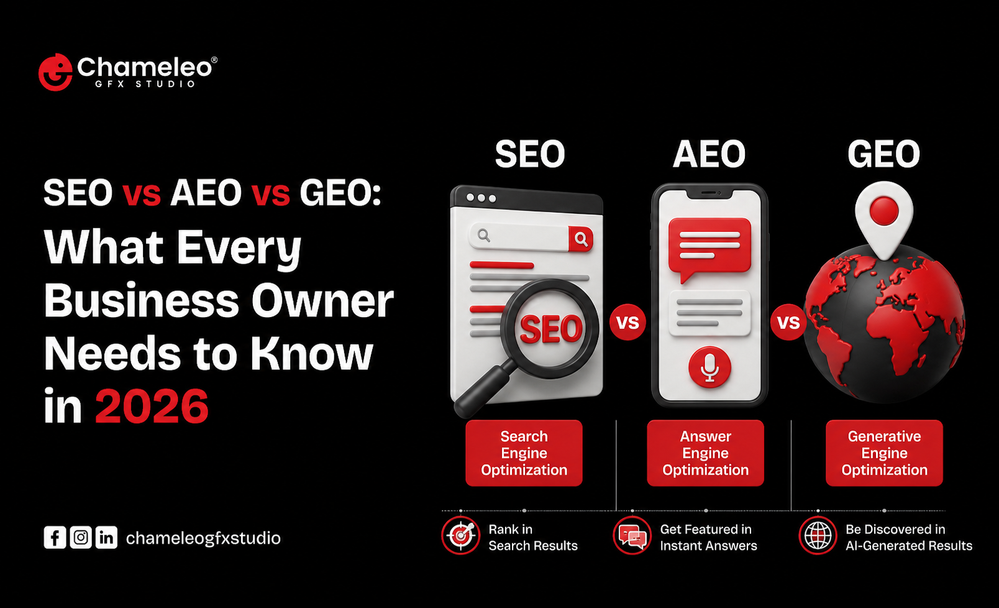

SEO vs AEO vs GEO: What Every Business Owner Needs to Know in 2026

Search is splitting into three different games, and most business owners are still only playing one of them.
For twenty years, ranking on Google was the entire ballgame. You optimized your website, built backlinks, chased keywords, and if you did it right, customers found you. That playbook still works, but it's no longer the only door customers walk through.
Today, people ask ChatGPT what car insurance to buy. They ask Perplexity which CRM fits a five-person startup. They ask Gemini to compare accounting software. None of these conversations touch a traditional search results page, yet they end in a decision, a click, or a purchase, just like a Google search does.
This is why SEO, AEO, and GEO now exist as three related but distinct disciplines. Understanding the difference isn't a technical nice-to-have anymore. It's the difference between a business that shows up everywhere customers are looking and one that quietly disappears from half the conversation.
This article breaks down exactly what SEO, AEO, and GEO mean, how they differ, and what you need to do in 2026 to make sure your business gets found, no matter which engine someone asks.
Table of Contents
- What Is SEO? (Search Engine Optimization)
- What Is AEO? (Answer Engine Optimization)
- What Is GEO? (Generative Engine Optimization)
- SEO vs AEO vs GEO: Key Differences
- Why This Matters for Your Business Right Now
- How SEO, AEO, and GEO Work Together
- Practical Steps to Optimize for All Three
- Common Mistakes Business Owners Make
- A Simple Framework for 2026
- FAQ
- Key Takeaways
- Conclusion
What Is SEO?
Search Engine Optimization (SEO) is the practice of improving your website so it ranks higher in traditional search engine results, primarily Google and Bing.
SEO focuses on:
- Keyword research and on-page optimization
- Technical site health (speed, mobile-friendliness, crawlability)
- Backlink building and domain authority
- Content quality and relevance
- User experience signals like bounce rate and time on page
SEO is built around one core idea: rank higher on a results page, get clicked, drive traffic. It's been the foundation of digital marketing for two decades, and it's not going anywhere. But it was designed for a world where a search led to a list of blue links. That world is changing fast.
Quick Definition: SEO is the process of optimizing a website to rank higher in traditional search engine results pages (SERPs) and drive organic traffic.
What Is AEO?
Answer Engine Optimization (AEO) is the practice of structuring your content so it gets pulled directly into answer boxes, featured snippets, voice search results, and AI-generated summaries at the top of search results.
Think about the last time you searched "what is the best time to post on Instagram" and Google gave you a direct answer box before you even scrolled. That's AEO in action.
AEO focuses on:
- Answering specific questions clearly and concisely
- Structuring content for featured snippets (short, direct paragraphs)
- Using schema markup like FAQ schema and How-To schema
- Formatting content with clear headings, lists, and tables
- Targeting question-based, conversational search queries
Quick Definition: AEO is the practice of optimizing content to be selected as the direct answer in featured snippets, voice search, and answer boxes.
Real-world example: A plumbing company that adds a clearly formatted "How much does it cost to fix a leaking pipe in India?" section, with a direct answer in the first sentence, is far more likely to win the featured snippet than a competitor who buries that answer three paragraphs deep in a generic blog post.
What Is GEO?
Generative Engine Optimization (GEO) is the newest and fastest-growing discipline. It's the practice of optimizing your content so AI platforms like ChatGPT, Gemini, Claude, Perplexity, and Copilot cite, reference, or recommend your business when generating a response.
This is a fundamentally different game than SEO or AEO. There's no results page to rank on. There's no snippet to win. Instead, an AI model reads across the web, synthesizes information from multiple sources, and generates a single conversational answer, sometimes with citations, sometimes without.
GEO focuses on:
- Being cited as a trustworthy source within AI-generated answers
- Structuring content so large language models can easily parse and understand it
- Building topical authority across a subject, not just a single page
- Clear, factual, well-organized information that AI models can extract confidently
- Strong entity recognition (your brand being clearly associated with your expertise)
Quick Definition: GEO is the practice of optimizing content so it gets referenced, cited, or recommended by AI-powered generative search tools like ChatGPT and Gemini.
Real-world example: If someone asks ChatGPT "what's the best digital marketing agency in Ahmedabad for startups," the AI isn't scanning a ranked list. It's pulling from content across the web that clearly, credibly, and specifically answers that question. If your agency's website never explicitly positions itself that way, in language AI can easily extract, you simply won't come up. Not because you're not good. Because you weren't legible to the machine.
SEO vs AEO vs GEO: Key Differences
| Factor | SEO | AEO | GEO |
|---|---|---|---|
| Goal | Rank on search results page | Win featured snippets & answer boxes | Get cited in AI-generated answers |
| Platform | Google, Bing | Google featured snippets, voice assistants | ChatGPT, Gemini, Perplexity, Claude, Copilot |
| Content Style | Keyword-optimized, long-form | Direct, concise, question-based | Authoritative, structured, entity-rich |
| Success Metric | Organic traffic, rankings | Snippet wins, voice search visibility | Citations, brand mentions in AI answers |
| Primary Format | Blog posts, landing pages | FAQ sections, how-to guides | In-depth, well-sourced, clearly labeled content |
| Technical Focus | Backlinks, site speed, crawlability | Schema markup, structured data | Clarity, factual accuracy, topical depth |
Pros and Cons at a Glance
SEO
- ✅ Established, well-understood, measurable
- ✅ Drives consistent long-term organic traffic
- ❌ Increasingly competitive and slow to show results
- ❌ Doesn't guarantee visibility in AI-driven search
AEO
- ✅ Puts you in front of users without them even clicking
- ✅ Great for voice search and mobile queries
- ❌ You may get the visibility but not the click
- ❌ Requires very specific content formatting
GEO
- ✅ Positions your brand inside the fastest-growing search behavior
- ✅ Builds long-term authority and trust with AI systems
- ❌ Still an emerging field with evolving best practices
- ❌ Harder to measure with traditional analytics tools
Why This Matters for Your Business Right Now
Here's the uncomfortable truth: a growing percentage of your potential customers are no longer starting their research on Google.
They're asking an AI assistant a question in plain language and getting a synthesized answer that already includes recommendations. If your business isn't part of that answer, you don't just rank lower. You don't exist in that conversation at all.
This shift is happening across every industry:
- B2B buyers ask AI tools to shortlist vendors before ever visiting a website
- Local customers ask AI assistants for recommendations near them
- Researchers and consumers use AI to compare products, services, and pricing before making a decision
For a business owner, this means visibility is no longer a single target. It's three overlapping targets, and each one requires a slightly different strategy to hit.
Pro Tip: Businesses that treat SEO, AEO, and GEO as three separate checkboxes to "get done" will always lag behind businesses that build one integrated content strategy designed to serve all three simultaneously.
How SEO, AEO, and GEO Work Together
The good news is that these three disciplines aren't competing with each other. They share a foundation.
Strong SEO builds the domain authority and content depth that AEO and GEO depend on. Strong AEO structuring, clear answers, well-organized headings, makes your content easier for both search engines and AI models to parse. And strong GEO practices, like clear entity definitions and factual accuracy, actually improve your standing with traditional search engines too.
Think of it less as three separate strategies and more as three lenses applied to the same core content:
- SEO lens: Is this discoverable and technically sound?
- AEO lens: Is this structured to directly answer a question?
- GEO lens: Is this clear, credible, and citation-worthy for an AI model?
When you write content that passes all three lenses, you're not just optimizing for today's search engines. You're future-proofing your visibility for whatever comes next.
Practical Steps to Optimize for All Three
1. Answer the Question in the First 100 Words
Whether it's a human, Google, or an AI model reading your content, lead with the direct answer. Save the elaboration for after.
2. Use Clear, Descriptive Headings
Headings that read like actual questions ("How much does SEO cost in India?") perform better across all three disciplines than vague, clever headings.
3. Add Structured Data and Schema Markup
FAQ schema, How-To schema, and Article schema help search engines and AI crawlers understand exactly what your content is about.
4. Build Topical Authority, Not Just Single Pages
AI models trust brands that have written extensively and accurately about a subject. One great blog post isn't enough. A cluster of interconnected, authoritative content is what earns citations.
5. Keep Paragraphs Short and Snippet-Friendly
Aim for 40 to 60-word paragraphs that could stand alone as a complete answer. This is the sweet spot for both featured snippets and AI extraction.
6. Use Tables and Comparisons Wherever Possible
AI models and answer engines both favor structured data over dense prose. Tables make comparison-based information easy to extract and cite.
7. Keep Content Updated and Accurate
Outdated statistics and stale information get filtered out by AI models trained to prioritize accuracy and recency.
8. Strengthen Your Brand's Digital Footprint
GEO rewards brands that are consistently mentioned, reviewed, and cited across the web, not just on their own website. Guest content, press mentions, and third-party reviews all feed into this.
Common Mistakes Business Owners Make
- Ignoring AEO and GEO entirely because "we've always done fine with SEO"
- Writing content that's technically optimized but never actually answers the question a real person is asking
- Treating AI visibility as unmeasurable and therefore unimportant, instead of tracking brand mentions and AI citations manually
- Overstuffing keywords in a way that made sense for 2015 SEO but actively hurts readability and AI trust today
- Publishing thin content instead of building genuine topical depth that earns long-term authority
Warning: Content designed purely to game algorithms, whether it's Google's or an AI model's, tends to age badly. Both systems are getting better at rewarding genuine expertise and penalizing manipulation.
A Simple Framework for 2026
Use this checklist before publishing any piece of content:
- ☐ Does it directly answer a real question within the first few sentences?
- ☐ Is it structured with clear H2s and H3s that mirror how people actually search?
- ☐ Does it include at least one table, list, or comparison?
- ☐ Is the information factually accurate and up to date?
- ☐ Does it include schema markup where relevant?
- ☐ Does it build authority on the topic, not just target one keyword?
- ☐ Would this content make sense as a standalone answer if quoted by an AI model?
If you can check every box, your content is built for all three engines at once.
FAQ
Key Takeaways
- SEO optimizes for traditional search engine rankings and organic traffic.
- AEO optimizes for featured snippets, answer boxes, and voice search.
- GEO optimizes for citations and recommendations within AI-generated answers.
- These three disciplines share a foundation: clear, structured, authoritative content.
- Businesses that ignore AEO and GEO risk becoming invisible to a growing share of AI-driven search behavior.
- Short, direct answers, structured data, and topical authority are the common threads across all three strategies.
- The businesses that win in 2026 will be the ones optimizing for all three engines at once, not just one.
Conclusion
Search isn't one thing anymore. It's three overlapping conversations happening across Google, voice assistants, and AI platforms, and your customers are moving fluidly between all of them without even thinking about it.
The businesses that thrive in 2026 won't be the ones that mastered SEO a decade ago and stopped there. They'll be the ones that understood the shift early, built content designed to answer real questions clearly, and made sure their expertise was legible not just to search engines, but to the AI systems shaping how people discover businesses today.
If you're not sure where your business currently stands across SEO, AEO, and GEO, that's the first thing worth finding out. Because the businesses getting cited by AI tools right now aren't necessarily the biggest ones. They're the ones that showed up, structured their content clearly, and made themselves impossible to miss.
Ready to find out where your business stands? Start by asking ChatGPT or Gemini a question a potential customer might ask about your industry. If your business doesn't show up, it's time to fix that.